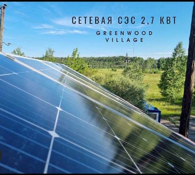
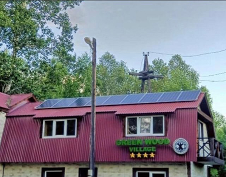

Турбаза Green Wood Village- это уникальное место, которое находится в сердце соснового бора.
комфортные номера и русская банька придадут сил и наполнят энергией. В нашей мангальной зоне вы сможете приготовить нежнейшее мясо и сочные овощи на гриле. Пляжная зона подарит вам потрясающий загар и море положительных эмоций.
Наша большая беседка погрузит вас в атмосферу рыцарства. Вы сможете примерить доспехи, посидеть на рыцарских креслах и устроить настоящий пир.
Для тех, кто любит активный отдых, мы предлагаем аренду лодки. Вы сможете полюбоваться прекрасным видом, проплыв вокруг нескольких островов, образуемых протокой реки Китой.Будем рады разделить с вами праздники и просто хорошие выходные, добро пожаловать!
База отдыха GreenWood Village за зеленую энергию!
Сетевая станция размещенная на административном здании базы позволяет уменьшить потребление электричества из сети
Солнечные батареи на крыше являются визуальным и практическим элементом экстерьера, создающим современный стиль. А также это показывает, что владельцы заботятся о природе.
Оборудование :
Сетевой инвертор SOFAR 2700TL-G3, 1 шт. Монокристаллические солнечные панели 300Вт, 9шт.

